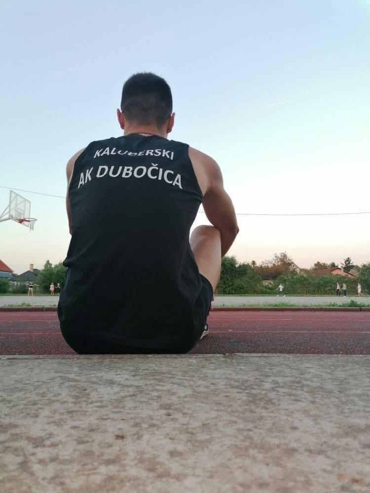

Igor Kaludjerski
Njegova atletska karijera započela je 2020. godine, kada je u Vrbasu istrčao svoju uličnu trku na 5km. Bez prethodnog treninga i ikakvog znanja o sportu kojem je danas potpuno posvećen, prešao je ciljnu liniju za nešto više od 19 minuta.
Da li je to bio nagoveštaj da bih, uz dodatni rad i pomoć profesionalaca, mogao značajno da napreduje, ili je presudila ljubav na prvi "korak" koju je tada osetio prema atletici - ne znam sa sigurnošću. Ono što se zna jeste da je ostao veran trčanju na srednje i duge staze, a rezultati nisu izostali. Prvobitno kroz nastupe za Atletski klub Vrbas, a potom i za Dubočicu iz Leskovca,čiji je i danas član,
napravio je brojne značajne iskorake u svojim rezultatima i borbi sa štopericom.

Kulminacija njegovog truda kada je prosle godine na sedam takmičenja osvojio sedam postolja, uključujući tri najsjajnija odličja.
Medju svoje najveće uspehe ubraja i šesto mesto na Prvenstvu Vojvodine 2023. godine u Sremskoj Mitrovici gde se takmišio na 3000 metara. Na istoj distanci na državnom prvenstvu u Kraljevu iste godine, gde je sa blagom povredom bio 7.
Medjutim, svi ti rezultati za njega nisu priblizno značajni kao ono što smo uz podršku velikog broja plemenitih ljudi, uspeo da ostvario na humanitarnom planu. Kako kaze Igor: "Velika mi je čast što sam kroz trčanje uspeo da skrenem pažnju na potrebe onih kojima je pomoć najpotrebnija - dve devojčiceiz Sivca, mog rodnog mesta." Dodao je još i
"Prošle godine ostvario sam i uspešnu saradnju sa "Seva" fondacijom, koja je nesebično pomogla u lečenju još jedne devojčice. Ove godine trčao sam 30 km u humanitarne svrhe, devojčici iz mog sela, Mili Žeželj."
Za sve one koji još uvek nisu vezali pertle i osmelili se da svoje trkačke patike povedu na nezaboravno putovanje, neka njegovi skromni počeci budu dokaz da se istrajnost uvek isplati i da naporan rad, trud i želja mogu učiniti nemoguće, mogućim.
Takodje se ističe da je i pored svega toga uspeo da svojim dragim prijateljima iz sveta trčanja pomogne u ostvarivanju boljeg vremena.
Ako imate neke nedoumice ili pitanja posaljite poruku ne facebook

ili me direktno kontaktirajte putem telefona na boj: +381 60/430-44-65